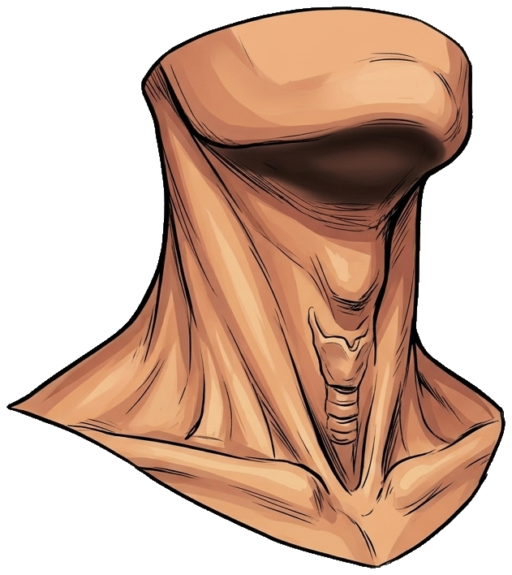
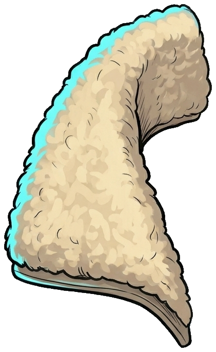
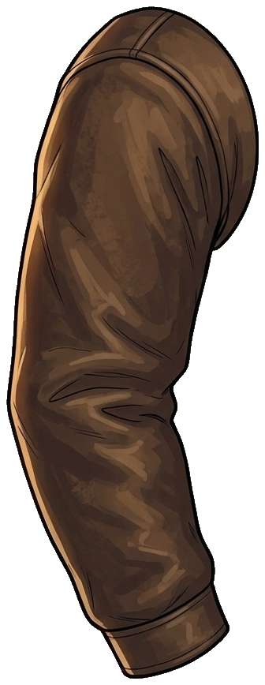
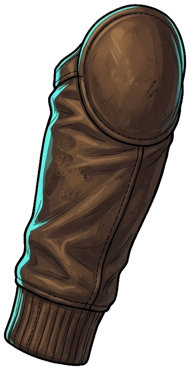
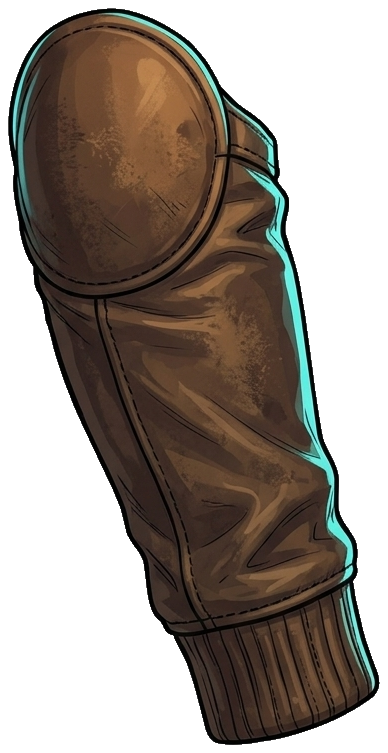
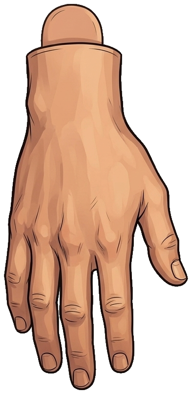
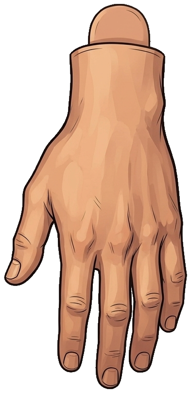

1. Back Hair / Nape (684×838)

Perspective Error: Generated 180° rear view of head/ears/neck instead of back-layer behind front face.
2. Head & Face Base (618×828)

Lighting Flip: Cyan rim light flipped to viewer's right (was viewer's left on Master Bust).
3. Front Hair / Bangs (713×768)

Shape Drift: Redrawn as wide curtain bangs + detached floating sideburn tufts; does not fit cranium.
4. Neck Column (631×708)

Style & Angle Drift: Worm's-eye anatomical medical etching with exposed tracheal rings.
5. Jacket Torso (838×937)

Garment Drift: Added cap-sleeve pauldrons & stand-up leather collar; cyan rim light lost.
6a. Left Shearling Collar (421×686)

Contour Mismatch: Floating C-curve does not match torso's stand-up collar geometry.
6b. Right Shearling Collar (421×686)

Contour Mismatch: Incompatible inner neck radius vs. torso opening.
7a. Left Upper Arm (336×868)

Anatomy Error: Generated full arm down to buttoned wrist cuff instead of upper arm only.
7b. Right Upper Arm (336×868)

Anatomy & Light Error: Full arm with wrist cuff; cyan rim light on wrong side.
8a. Left Forearm (387×753)

Style Drift: Oversized stitched elbow pad + dual-sided cyan rim light + ribbed cuff.
8b. Right Forearm (388×753)

Style Drift: Incompatible with upper arm (which already has a buttoned wrist cuff).
9a. Left Hand (393×808)

Style & Pose Drift: Flat dorsal mannequin hand with hard wrist cut line below tab.
9b. Right Hand (393×808)

Shading Drift: Lacks master bust's painted skin contrast and directional rim light.
Gate 2 Empirical Finding
While alpha extraction from neutral #7A7A7A grey succeeded cleanly with zero magenta halo contamination, generating body parts as separate AI image calls produced severe inter-part incompatibilities: flipped rim lighting, incompatible collar/shoulder geometry, full-arm duplication in the upper-arm asset, worm's-eye neck perspective, and mismatched hair silhouette.